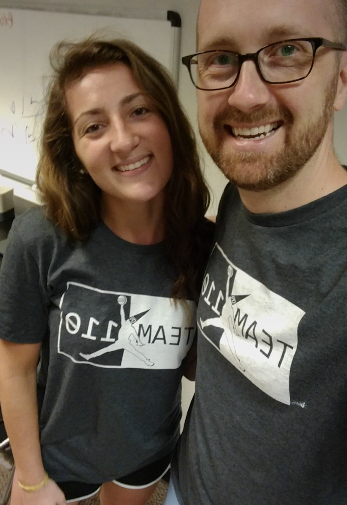

BROOKE CANTER
Junior at the University of North Carolina at Chapel Hill
BROOKE CANTER
Junior at the University of North Carolina at Chapel Hill
ABOUT
Charlotte, NC
brookebc@live.unc.edu
(980)406-1649
canterbro
Languages
English
Chinese
Member of Pi Beta Phi Fraternity for Women
Teaching Assistant for Intro Computer Science Course
Huawei's 2017 Seeds for the Future Participant
Member of the UNC Boxing Club
Helped host the 1st annual COMP110 Hackathon
EDUCATION AND EXPERIENCE
Graduate May 2019
UNC Chapel Hill
Computer Science BA
Asian Studies with a Chinese Concentration BA
RELATED COURSEWORK
Advanced Web Programming
Files and Databases
Models: Languages/Composition
Data Structures
Computer Organization
Discrete Structures
My Experience as a TA
Mentor and assist over 150 students one-on-one during
weekly office hours on the concepts and assignments of the
introductory computer science course.
Teamed with other teaching assistants to host the first annual UNC Introduction
to Computer Science Hackathon.
HTML | CSS | JavaScript | Java
~January-present~
My Experience with Huawei
Chosen as one of twenty other U.S. STEM majors to explore Huawei headquarters based in Shenzhen, China.
I received one week of cultural training in Bejing, China, and one week of technical training
in Shenzhen, China. Worked on a team to build and debug a base station. At the end of the two weeks
all participants were required to take a final exam allowing us to graduate from the program.
~Summer 2017~
SKILLS
Programming Languages
Java
Typescipt
HTML/CSS
Javascript
MIPS Assembly(basic)
C
***Chinese writing exerpt goes here***
IDE/Operating Systems
Windows
Eclipse
Linux(basic)
MacOS
Visual Studio Code